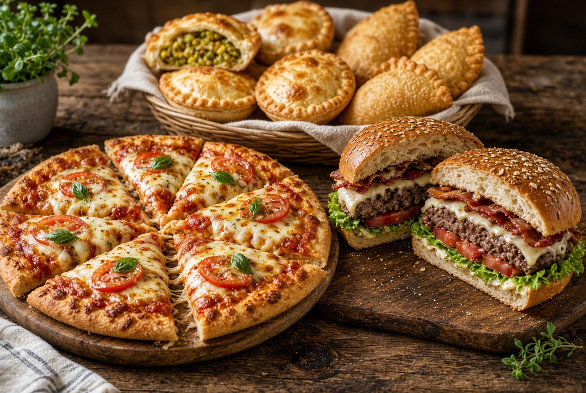

01
Receitas variadas
Opções de salgados e doces para consultar e montar combinações para o seu cardápio.
Aprenda preparos de salgados e doces e encontre conteúdos para organizar sua produção, precificar e trabalhar com delivery.
Acesso ao conteúdo digital • Garantia de 7 dias

Conteúdos organizados para você ampliar suas opções e entender melhor a rotina de produção de alimentos.
Opções de salgados e doces para consultar e montar combinações para o seu cardápio.
Orientações para pensar nos preparos, na rotina e na apresentação dos produtos.
Conteúdos sobre precificação, embalagens e delivery para planejar sua oferta.

Tenha variedade para consultar na hora de planejar seus produtos e apresentar mais opções aos seus clientes.

Explore receitas doces para complementar sua produção e construir uma apresentação mais completa para sua oferta.
Conheça os temas que ajudam a transformar ideias em uma produção mais planejada.

Organize os preparos e pense em uma rotina mais funcional para sua cozinha.

Veja como produção, precificação, embalagens e delivery fazem parte da oferta.
Escolha acessar o checkout e confira as condições atuais do Método Cozinha que Rende.
Você conta com o prazo de garantia informado na oferta.
Sim. O Método Cozinha que Rende é apresentado como um produto de conteúdo digital.
A oferta reúne 650 receitas e conteúdos relacionados a salgados, doces, produção, precificação e delivery.
Após a confirmação da compra, as instruções de acesso são apresentadas no checkout e enviadas conforme as condições do produtor.
Sim. A oferta informa garantia de 7 dias. Consulte os termos apresentados no checkout.
O conteúdo pode ser consultado por quem deseja conhecer mais receitas e organizar melhor sua produção. Avalie se a proposta atende ao seu momento.